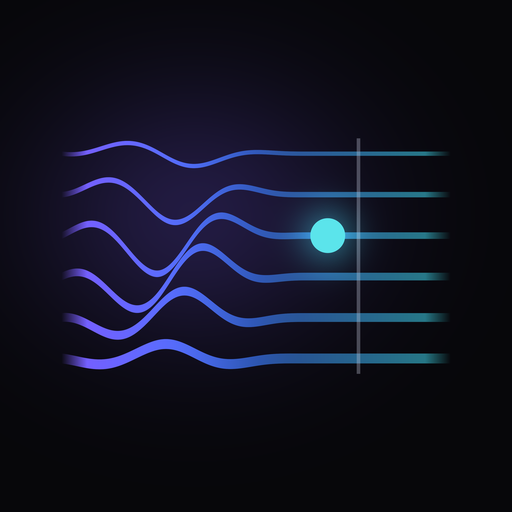

Foco
Só a guitarra, ou sem ela
Arraste para misturar do jeito que quiser: só a guitarra para ouvir cada detalhe, tudo junto, ou a banda sem a guitarra para você tocar no lugar.

O RIFFNEX separa a guitarra das suas músicas, no próprio iPhone. Ouça só ela, desacelere e repita cada riff até conseguir tocar.
Grátis. Sem cadastro. As suas músicas não saem do aparelho. O RIFFNEX não fornece músicas: use apenas as que você tem o direito de usar.
Você importa uma música sua. O RIFFNEX faz o resto, sem internet e sem mandar nada para lugar nenhum.
Arraste para misturar do jeito que quiser: só a guitarra para ouvir cada detalhe, tudo junto, ou a banda sem a guitarra para você tocar no lugar.
Segure e arraste sobre a música. O trecho vira um anel que repete sem parar, alinhado ao tempo. Salve os riffs que quiser praticar de novo.
Gire o anel para tocar de 40% a 100% da velocidade, sem mudar o tom. Ou deixe o app subir aos poucos, volta a volta, até a velocidade real.
Um braço de guitarra mostra as notas estimadas da guitarra separada, com a casa, a base do acorde e o tom da música. O app avisa quando tem menos certeza.
O app sugere a afinação da música e ajuda você a afinar de ouvido. Se a música estiver meio tom abaixo, você toca com a guitarra no padrão.
Gestos grandes, para usar com a guitarra no colo. O celular vibra a cada volta do riff, e a tela fica acesa enquanto você pratica.
Pelo app ou direto do app Arquivos, com "Abrir no RIFFNEX". Aceita MP3, M4A, WAV e AIFF.
Na primeira vez, o iPhone separa a guitarra do resto da banda em alguns minutos. Depois a música abre na hora.
Escolha o trecho, ajuste a velocidade e repita até sair. Um guia rápido mostra os gestos na primeira vez.
Tirar uma música de ouvido é mais fácil quando você ouve a guitarra sozinha. O RIFFNEX separa a guitarra do resto da banda, deixa você desacelerar a música sem mudar o tom e repetir o mesmo trecho em loop quantas vezes precisar.
Pegue o riff da sua banda favorita devagar, nota por nota, com o braço mostrando onde tocar.
Tire solos e riffs rápidos de ouvido em 50% ou 70% da velocidade, e suba aos poucos até a velocidade real.
Deixe a banda tocando sem a guitarra e toque no lugar dela, com a música afinada do jeito da sua guitarra.
Tudo é processado no iPhone: a separação, as notas, o tempo e o tom. O RIFFNEX não pede cadastro, não usa publicidade e não coleta nenhum dado. Leia a política de privacidade.